Code
```{r}
#lapply(c('tidyverse','data.table','igraph','ggraph','kableExtra'),library,character.only=TRUE))
pacman::p_load(tikzDevice, knitr)
```https://www.andrewheiss.com/blog/2021/08/27/tikz-knitr-html-svg-fun/ https://gist.github.com/andrewheiss/4ece621813a27dfdcaef7f1c2d773237
```{r}
#lapply(c('tidyverse','data.table','igraph','ggraph','kableExtra'),library,character.only=TRUE))
pacman::p_load(tikzDevice, knitr)
```
Here is a TikZ picture
```{r, engine = 'tikz'}
#| eval: true
\tikzset{
declare function={
sig = 0.1;
mu = 0;
g(\x) = 1/(sig*sqrt(2*pi)) * exp(-1/2 * ((\x-mu)/sig)^2);
}
}
\begin{tikzpicture}[
shorten >=1pt,
->,
draw=black!50,
node distance=2.5cm,
scale=1.5,
every pin edge/.style={<-,shorten <=1pt},
neuron/.style={
circle,fill=black!25,minimum size=17pt,inner sep=0pt,
path picture={
\draw[red,thick,-] plot[domain=-0.3:0.3,samples=11,smooth] ({\x},{0.05*g(\x)});
},
},
input neuron/.style={neuron, fill=green!50},
output neuron/.style={neuron, fill=red!50},
hidden neuron/.style={neuron, fill=blue!50},
annot/.style={text width=4em, text centered},
]
% Draw the input layer nodes
\foreach \name / \y in {1,...,4}
% This is the same as writing \foreach \name / \y in {1/1,2/2,3/3,4/4}
\node[input neuron, pin=left:Input \y] (I-\name) at (0,-\y) {};
% Draw the hidden layer nodes
\foreach \name / \y in {1,...,5}
\path[yshift=0.5cm]
node[hidden neuron] (H-\name) at (2.5cm,-\y cm) {};
% Draw the output layer node
\node[output neuron,pin={[pin edge={->}]right:Output}, right of=H-3] (O) {};
% Connect every node in the input layer with every node in the
% hidden layer.
\foreach \source in {1,...,4}
\foreach \dest in {1,...,5}
\path (I-\source) edge (H-\dest);
% Connect every node in the hidden layer with the output layer
\foreach \source in {1,...,5}
\path (H-\source) edge (O);
% Annotate the layers
\node[annot,above of=H-1, node distance=1cm] (hl) {Hidden layer};
\node[annot,above of=I-1, node distance=1cm] {Input layer};
\node[annot,above of=O] {Output layer};
\end{tikzpicture}
```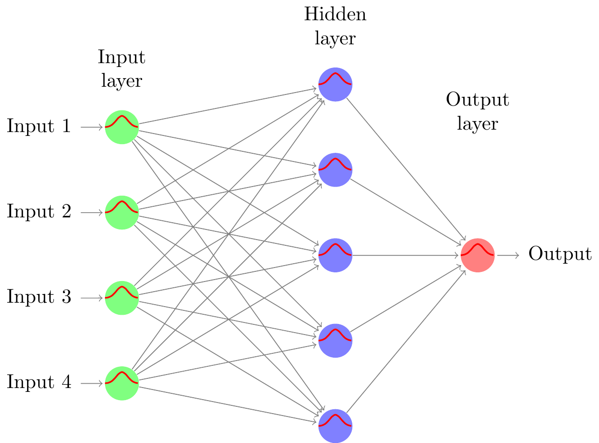
```{r, engine = 'tikz'}
#| eval: true
#| cache: true
\usetikzlibrary{matrix,chains,positioning,decorations.pathreplacing,arrows}
\begin{tikzpicture}[
init/.style={
draw,
circle,
inner sep=2pt,
font=\Huge,
join = by -latex
},
squa/.style={
draw,
inner sep=2pt,
font=\Large,
join = by -latex
},
start chain=2,node distance=13mm
]
\node[on chain=2]
(x2) {$x_2$};
\node[on chain=2,join=by o-latex]
{$w_2$};
\node[on chain=2,init] (sigma)
{$\displaystyle\Sigma$};
\node[on chain=2,squa,label=above:{\parbox{2cm}{\centering Activate \\ function}}]
{$f$};
\node[on chain=2,label=above:Output,join=by -latex]
{$y$};
\begin{scope}[start chain=1]
\node[on chain=1] at (0,1.5cm)
(x1) {$x_1$};
\node[on chain=1,join=by o-latex]
(w1) {$w_1$};
\end{scope}
\begin{scope}[start chain=3]
\node[on chain=3] at (0,-1.5cm)
(x3) {$x_3$};
\node[on chain=3,label=below:Weights,join=by o-latex]
(w3) {$w_3$};
\end{scope}
\node[label=above:\parbox{2cm}{\centering Bias \\ $b$}] at (sigma|-w1) (b) {};
\draw[-latex] (w1) -- (sigma);
\draw[-latex] (w3) -- (sigma);
\draw[o-latex] (b) -- (sigma);
\draw[decorate,decoration={brace,mirror}] (x1.north west) -- node[left=10pt] {Inputs} (x3.south west);
\end{tikzpicture}
```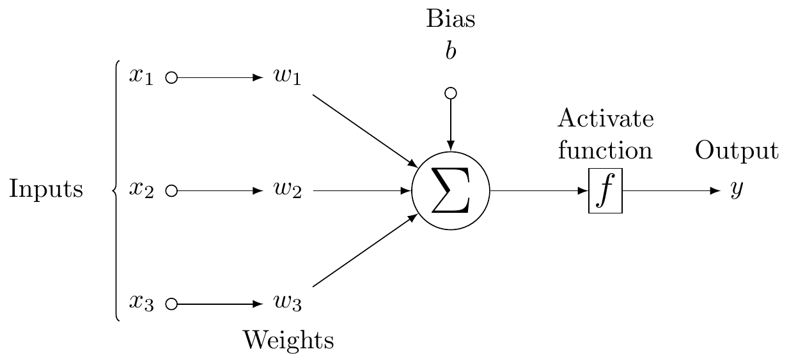
```{r, engine = 'tikz'}
#| eval: true
#| cache: true
\usetikzlibrary{positioning}
\tikzset{basic/.style={draw,fill=blue!20,text width=1em,text badly centered}}
\tikzset{input/.style={basic,circle}}
\tikzset{weights/.style={basic,rectangle}}
\tikzset{functions/.style={basic,circle,fill=blue!10}}
\begin{tikzpicture}
\node[functions] (center) {};
\node[below of=center,font=\scriptsize,text width=4em] {Activation function};
\draw[thick] (0.5em,0.5em) -- (0,0.5em) -- (0,-0.5em) -- (-0.5em,-0.5em);
\draw (0em,0.75em) -- (0em,-0.75em);
\draw (0.75em,0em) -- (-0.75em,0em);
\node[right of=center] (right) {};
\path[draw,->] (center) -- (right);
\node[functions,left=3em of center] (left) {$\sum$};
\path[draw,->] (left) -- (center);
\node[weights,left=3em of left] (2) {$w_2$} -- (2) node[input,left of=2] (l2) {$x_2$};
\path[draw,->] (l2) -- (2);
\path[draw,->] (2) -- (left);
\node[below of=2] (dots) {$\vdots$} -- (dots) node[left of=dots] (ldots) {$\vdots$};
\node[weights,below of=dots] (n) {$w_n$} -- (n) node[input,left of=n] (ln) {$x_n$};
\path[draw,->] (ln) -- (n);
\path[draw,->] (n) -- (left);
\node[weights,above of=2] (1) {$w_1$} -- (1) node[input,left of=1] (l1) {$x_1$};
\path[draw,->] (l1) -- (1);
\path[draw,->] (1) -- (left);
\node[weights,above of=1] (0) {$w_0$} -- (0) node[input,left of=0] (l0) {$1$};
\path[draw,->] (l0) -- (0);
\path[draw,->] (0) -- (left);
\node[below of=ln,font=\scriptsize] {inputs};
\node[below of=n,font=\scriptsize] {weights};
\end{tikzpicture}
```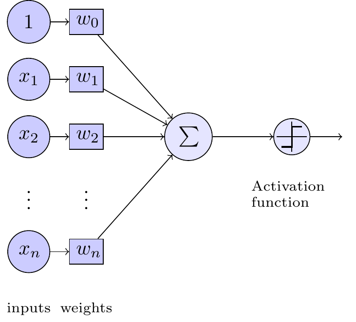
```{r, engine = 'tikz'}
#| eval: true
#| cache: true
\usetikzlibrary{%
calc,
fit,
shapes,
backgrounds
}
% the next macro is useful to create a table
\newcommand\tabins[3]{%
\tikz[baseline=(Tab.base)]
\node [rectangle split,
rectangle split parts=3,
draw,
align=right,
inner sep=.5em,
rectangle split horizontal] (Tab)
{\hbox to 4ex{#1}
\nodepart{two} {\hbox to 8ex{\hfill #2\$}}
\nodepart{three}{\hbox to 3ex{#3}}};
}
\parindent=0pt
\begin{tikzpicture}[%
%every node/.style={transform shape},% now is not necessary but good for a poster
x=1.25cm,y=2cm,
font=\footnotesize,
% every group of nodes have a style except for main, the style is named by a letter
main/.style={draw,fill=yellow,inner sep=.5em},
R/.style={draw,fill=purple!40!blue!30,inner sep=.5em},
M/.style={draw,fill=green!80!yellow,inner sep=.5em},
S/.style={anchor=east},
V/.style={anchor=west},
P/.style={anchor=center},
F/.style={anchor=west}
]
% main node the reference Shuffle
\node[main] (shuffle) {Group};
%group R reducer
\node[R] at ($(shuffle)+(8,1)$) (R1+) {Reduce};
\node[R] at ($(shuffle)+(8, 0)$) (R0) {Reduce};
\node[R] at ($(shuffle)+(8,-1)$) (R1-) {Reduce};
% group M Mapper
\node[M] at ($(shuffle)+(-6,+2.5)$) (M3+) {Map};
\node[M] at ($(shuffle)+(-6,+ 1.5)$) (M2+) {Map};
\node[M] at ($(shuffle)+(-6,+ .5)$) (M1+) {Map};
\node[M] at ($(shuffle)+(-6,- .5)$) (M1-) {Map};
\node[M] at ($(shuffle)+(-6,- 1.5)$) (M2-) {Map};
\node[M] at ($(shuffle)+(-6,-2.5)$) (M3-) {Map};
% group S Start the first nodes
\node[S] at ($(M3+)+(-1.5,0)$) (S3+) {\Big($k_1$,\tabins{4711}{59.90}{NY}\Big)};
\node[S] at ($(M2+)+(-1.5,0)$) (S2+) {\Big($k_2$,\tabins{4713}{142.99}{CA}\Big)};
\node[S] at ($(M1+)+(-1.5,0)$) (S1+) {\Big($k_3$,\tabins{4714}{72.00}{NY}\Big)};
\node[S] at ($(M1-)+(-1.5,0)$) (S1-) {\Big($k_4$,\tabins{4715}{108.75}{NY}\Big)};
\node[S] at ($(M2-)+(-1.5,0)$) (S2-) {\Big($k_5$,\tabins{4718}{19.89}{WA}\Big)};
\node[S] at ($(M3-)+(-1.5,0)$) (S3-) {\Big($k_6$,\tabins{4719}{36.60}{CA}\Big)};
% group V why not
\node[V] at ($(M3+)+(1.5,0)$) (V3+) {\Big(NY,59.90\$\Big)};
\node[V] at ($(M2+)+(1.5,0)$) (V2+) {\Big(CA,142.99\$\Big)};
\node[V] at ($(M1+)+(1.5,0)$) (V1+) {\Big(NY,72.00\$\Big)};
\node[V] at ($(M1-)+(1.5,0)$) (V1-) {\Big(NY,108.75\$\Big)};
\node[V] at ($(M2-)+(1.5,0)$) (V2-) {\Big(WA,19.89\$\Big)};
\node[V] at ($(M3-)+(1.5,0)$) (V3-) {\Big(CA,36.60\$\Big)};
\node[P] at ($(R1+)+(-4,0)$) (P1+) {\Big(CA,\big[142.99\$,36.60\$\big]\Big)};
\node[P] at ($(R0) +(-4,0)$) (P0) {\Big(NY,\big[59.90\$,72.00\$,108.75\big]\Big)};
\node[P] at ($(R1-)+(-4,0)$) (P1-) {\Big(WA,\big[19.89\$\big]\Big)};
\node[F] (F1+) at ($(R1+)+(1.5,0)$) {(CA,89.80\$)};
\node[F] (F0) at ($(R0) +(1.5,0)$) {(NY,80.22\$)};
\node[F] (F1-) at ($(R1-)+(1.5,0)$) {(WA,72.00\$)};
% wrappers
\begin{scope}[on background layer]
\node[fill=lightgray!50,inner sep = 4mm,fit=(shuffle),label=above:Shuffle] {};
\end{scope}
\begin{scope}[on background layer]
\node[fill=lightgray!50,inner sep = 4mm,fit=(R1+)(R1-),label=above:Reducer] {};
\end{scope}
\begin{scope}[on background layer]
\node[fill=lightgray!50,inner sep = 4mm,fit=(M3+)(M3-),label=above:Mapper] {};
\end{scope}
%edges
\foreach \indice in {3+,2+,1+,1-,2-,3-} \draw[->] (S\indice.east) -- (M\indice.west);
\foreach \indice in {3+,2+,1+,1-,2-,3-} \draw[->] (M\indice.east) -- (V\indice.west);
\foreach \indice in {3+,2+,1+,1-,2-,3-} \draw[->] (V\indice.east) to [out=0,in=180] (shuffle.west);
\foreach \indice in {1+,0,1-} \draw[->] (shuffle.east) to [out=0,in=180] (P\indice.west);
\foreach \indice in {1+,0,1-} \draw[->] (P\indice.east) -- (R\indice.west);
\foreach \indice in {1+,0,1-} \draw[->] (R\indice.east) -- (F\indice.west);
\end{tikzpicture}
```
```{r, engine = 'tikz'}
#| eval: true
#| cache: true
#|
\def\layersep{3cm}
\def\nodeinlayersep{1.5cm}
\begin{tikzpicture}
[
shorten >=1pt,->,
draw=black!50,
node distance=\layersep,
every pin edge/.style={<-,shorten <=1pt},
neuron/.style={circle,fill=black!25,minimum size=17pt,inner sep=0pt},
input neuron/.style={neuron, fill=green!50,},
output neuron/.style={neuron, fill=red!50},
hidden neuron/.style={neuron, fill=blue!50},
annot/.style={text width=4em, text centered},
bias/.style={neuron, fill=yellow!50,minimum size=4em},%<-- added %%%
]
% Draw the input layer nodes
\foreach \name / \y in {1,...,3}
\node[input neuron, pin=left:Input \#\y] (I-\name) at (0,-\y-2.5) {};
% set number of hidden layers
\newcommand\Nhidden{2}
% Draw the hidden layer nodes
\foreach \N in {0,...,\Nhidden} {
\foreach \y in {0,...,5} { % <-- added 0 instead of 1 %%%%%
\ifnum \y=4
\ifnum \N>0 %<-- added %%%%%%%%%%%%%%%%%%%%%%%%%%%%%%%%%%%%%%%%%%%%
\node at (\N*\layersep,-\y*\nodeinlayersep) {$\vdots$}; % add dots
\else\fi %<-- added %%%%%%%%%%%%%%%%%%%%%%%%%%%%%%%%%%%%%%%%%%%%
\else
\ifnum \y=0 %<-- added %%%%%%%%%%%%%%%%%%%%%%%%%%%%%%%%%%
\ifnum \N<3 %<-- added %%%%%%%%%%%%%%%%%%%%%%%%%%%%%%%%%%
\node[bias] (H\N-\y) at (\N*\layersep,-\y*\nodeinlayersep ) {Bias}; %<-- added
\else\fi %<-- added %%%%%%%%%%%%%%%%%%%%%%%%%%%%%%%%
\else %<-- added %%%%%%%%%%%%%%%%%%%%%%%%%%%%%%%%%%%%%%%%%%%%
\ifnum \N>0 %<-- added %%%%%%%%%%%%%%%%%%%%%%%%%
% print function
\node[hidden neuron] (H\N-\y) at (\N*\layersep,-\y*\nodeinlayersep ) {$\frac{1}{1+e^{-x}}$}; %<-- added %%%%%%%%%%%
\else\fi %<-- added %%%%%%%%%%%%
\fi %<-- added %%%%%%%
\fi
}
\ifnum \N>0 %<-- added %%%%%%
% print hidden layer labels at the top
\node[annot,above of=H\N-1, node distance=1cm,yshift=2cm] (hl\N) {Hidden layer \N}; % <- added yshift=2cm %%%%%%%%%%%%
\else\fi %<-- added %%%%%
}
% Draw the output layer node and label
\node[output neuron,pin={[pin edge={->}]right:Output}, right of=H\Nhidden-3] (O) {};
% Connect bias every node in the input layer with every node in the
% hidden layer.
\foreach \source in {1,...,3}
\foreach \dest in {1,...,3,5} {
% \path[yellow] (H-0) edge (H1-\dest);
\path[dashed,orange] (H0-0) edge (H1-\dest); %<-- added %%%%%
\path[green!50] (I-\source) edge (H1-\dest); % change to green, yellow gets blended
};
% connect all hidden stuff
\foreach [remember=\N as \lastN (initially 1)] \N in {2,...,\Nhidden}
\foreach \source in {0,...,3,5}
\foreach \dest in {1,...,3,5}{
\ifnum \source=0 %<-- added %%%%%%%%%%%%%%%%%%%%%%%
\path[dashed,red](H\lastN-\source) edge (H\N-\dest);%<-- added
\else %<-- added %%%
\path[blue!50] (H\lastN-\source) edge (H\N-\dest);%<-- added
\fi %<-- added %%%
}; %<-- added %%%%
% Connect every node in the hidden layer with the output layer
\foreach \source in {1,...,3,5}
\path[green!50] (H\Nhidden-\source) edge (O);
\path[dashed,red] (H2-0) edge (O); %<-- added %%%%
% Annotate the input and output layers
\node[annot,left of=hl1] {Input layer};
\node[annot,right of=hl\Nhidden] {Output layer};
\end{tikzpicture}
```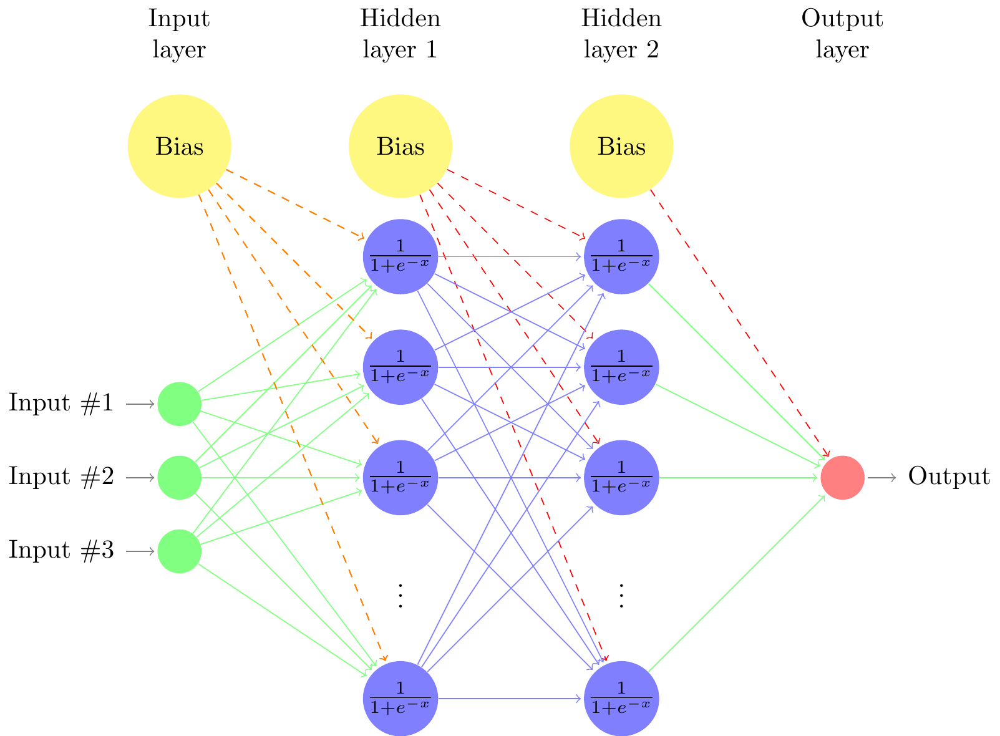
```{r, engine = 'tikz'}
#| eval: true
#| cache: true
\usetikzlibrary{positioning}
\tikzstyle{inputNode}=[draw,circle,minimum size=10pt,inner sep=0pt]
\tikzstyle{stateTransition}=[-stealth, thick]
\begin{tikzpicture}
\node[draw,circle,minimum size=25pt,inner sep=0pt] (x) at (0,0) {$\Sigma$ $\sigma$};
\node[inputNode] (x0) at (-2, 1.5) {$\tiny +1$};
\node[inputNode] (x1) at (-2, 0.75) {$\tiny x_1$};
\node[inputNode] (x2) at (-2, 0) {$\tiny x_2$};
\node[inputNode] (x3) at (-2, -0.75) {$\tiny x_3$};
\node[inputNode] (xn) at (-2, -1.75) {$\tiny x_n$};
\draw[stateTransition] (x0) to[out=0,in=120] node [midway, sloped, above] {$w_0$} (x);
\draw[stateTransition] (x1) to[out=0,in=150] node [midway, sloped, above] {$w_1$} (x);
\draw[stateTransition] (x2) to[out=0,in=180] node [midway, sloped, above] {$w_2$} (x);
\draw[stateTransition] (x3) to[out=0,in=210] node [midway, sloped, above] {$w_3$} (x);
\draw[stateTransition] (xn) to[out=0,in=240] node [midway, sloped, above] {$w_n$} (x);
\draw[stateTransition] (x) -- (4,0) node [midway,above] {$\sigma\left(w_0 + \sum\limits_{i=1}^{n}{w_ix_i}\right)$};
\draw[dashed] (0,-0.43) -- (0,0.43);
\node (dots) at (-2, -1.15) {$\vdots$};
\node[inputNode, thick] (i1) at (6, 0.75) {};
\node[inputNode, thick] (i2) at (6, 0) {};
\node[inputNode, thick] (i3) at (6, -0.75) {};
\node[inputNode, thick] (h1) at (8, 1.5) {};
\node[inputNode, thick] (h2) at (8, 0.75) {};
\node[inputNode, thick] (h3) at (8, 0) {};
\node[inputNode, thick] (h4) at (8, -0.75) {};
\node[inputNode, thick] (h5) at (8, -1.5) {};
\node[inputNode, thick] (o1) at (10, 0.75) {};
\node[inputNode, thick] (o2) at (10, -0.75) {};
\draw[stateTransition] (5, 0.75) -- node[above] {$I_1$} (i1);
\draw[stateTransition] (5, 0) -- node[above] {$I_2$} (i2);
\draw[stateTransition] (5, -0.75) -- node[above] {$I_3$} (i3);
\draw[stateTransition] (i1) -- (h1);
\draw[stateTransition] (i1) -- (h2);
\draw[stateTransition] (i1) -- (h3);
\draw[stateTransition] (i1) -- (h4);
\draw[stateTransition] (i1) -- (h5);
\draw[stateTransition] (i2) -- (h1);
\draw[stateTransition] (i2) -- (h2);
\draw[stateTransition] (i2) -- (h3);
\draw[stateTransition] (i2) -- (h4);
\draw[stateTransition] (i2) -- (h5);
\draw[stateTransition] (i3) -- (h1);
\draw[stateTransition] (i3) -- (h2);
\draw[stateTransition] (i3) -- (h3);
\draw[stateTransition] (i3) -- (h4);
\draw[stateTransition] (i3) -- (h5);
\draw[stateTransition] (h1) -- (o1);
\draw[stateTransition] (h1) -- (o2);
\draw[stateTransition] (h2) -- (o1);
\draw[stateTransition] (h2) -- (o2);
\draw[stateTransition] (h3) -- (o1);
\draw[stateTransition] (h3) -- (o2);
\draw[stateTransition] (h4) -- (o1);
\draw[stateTransition] (h4) -- (o2);
\draw[stateTransition] (h5) -- (o1);
\draw[stateTransition] (h5) -- (o2);
\node[above=of i1, align=center] (l1) {Input \\ layer};
\node[right=2.3em of l1, align=center] (l2) {Hidden \\ layer};
\node[right=2.3em of l2, align=center] (l3) {Output \\ layer};
\draw[stateTransition] (o1) -- node[above] {$O_1$} (11, 0.75);
\draw[stateTransition] (o2) -- node[above] {$O_2$} (11, -0.75);
\path[dashed, double, ultra thick, gray] (x.north) edge[bend left=0] (h5.north);
\path[dashed, double, ultra thick, gray] (x.south) edge[bend right=0] (h5.south);
\end{tikzpicture}
```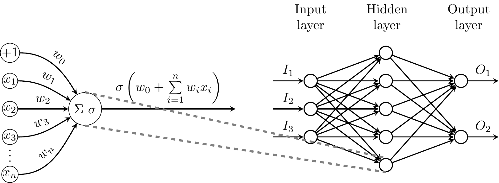
```{r, engine = 'tikz'}
#| eval: false
\usetikzlibrary{positioning,decorations.pathreplacing,shapes}
\newcommand*{\cancer}{\text{cancer}}
\newcommand*{\testp}{\text{test}+}
\begin{tikzpicture}[%
% common options for blocks:
block/.style = {draw, fill=blue!30, align=center, anchor=west,
minimum height=0.65cm, inner sep=0},
% common options for the circles:
ball/.style = {circle, draw, align=center, anchor=north, inner sep=0}]
% circle illustrating all women
\node[ball,text width=3cm,fill=purple!20] (all) at (6,0) {All women};
% two circles showing split of p{cancer} and p{~cancer}
\node[ball,fill=red!70,text width=0.1cm,anchor=base] (pcan) at (3.5,-5.5) {};
\node[ball,fill=blue!40,text width=2.9cm,anchor=base] (pncan) at (8.5,-6)
{Women without cancer\\
$\p({\sim}\cancer) = 99\%$};
% arrows showing split from all women to cancer and ~cancer
\draw[->,thick,draw=red!50] (all.south) to [out=270,in=90] (pcan.north);
\draw[->,thick,draw=blue!80] (all.south) to [out=270,in=110] (pncan.100);
% transition from all women to actual cancer rates
\node[anchor=north,text width=10cm,inner sep=.05cm,align=center,fill=white]
(why1) at (6,-3.7) {In measuring, we find:};
% note illustration the p{cancer} circle (text wont fit inside)
\node[inner sep=0,anchor=east,text width=3.3cm] (note1) at (3.2,-5.5) {
Women with cancer $\p(\cancer) = 1\%$};
% draw the sieves
\node[block,anchor=north,text width=4.4cm,fill=green!50] (tray1) at
(3.5,-8.8) {\small{$\p(\testp\mid\cancer)=0.8$}};
\node[block,anchor=north,text width=4.4cm,fill=green!50] (tray2) at
(8.5,-8.8) {$\p(\testp\mid{\sim}\cancer)=0.096$};
% text explaining how p{cancer} and p{~cancer} behave as they
% pass through the sieves
\node[anchor=west,text width=6cm] (note1) at (-6,-9.1) {
Now we pass both groups through the sieve; note that both
sieves are \emph{the same}; they just behave differently
depending on which group is passing through. \\
Let $\testp=$ a positve mammography.};
% arrows showing the circles passing through the seives
\draw[->,thick,draw=red!80] (3.5,-5.9) -- (3.5,-8.6);
\draw[->,thick,draw=blue!50] (8.5,-8.1) -- (8.5,-8.6);
% numerator
\node[ball,text width=0.05cm,fill=red!70] (can) at (6,-10.5) {};
% dividing line
\draw[thick] (5,-11) -- (7,-11);
% demoniator
\node[ball,text width=0.39cm,fill=blue!40,anchor=base] (ncan) at (6.5,-11.5) {};
\node[ball,text width=0.05cm,fill=red!70,anchor=base] (can2) at (5.5,-11.5) {};
% plus sign in denominator
\draw[thick] (5.9,-11.4) -- (5.9,-11.6);
\draw[thick] (5.8,-11.5) -- (6,-11.5);
% arrows showing the output of the sieves formed the fraction
\draw[->,thick,draw=red!80] (tray1.south) to [out=280,in=180] (can);
\draw[->,thick,draw=red!80] (tray1.south) to [out=280,in=180] (can2);
\node[anchor=north,inner sep=.1cm,align=center,fill=white] (why2) at
(3.8,-9.8) {$1\% * 80\%$};
\draw[->,thick,draw=blue!50] (tray2.south) to [out=265,in=0] (ncan);
\node[anchor=north,inner sep=.1cm,align=center,fill=white] (why2) at
(8.4,-9.8) {$99\% * 9.6\%$};
% explanation of final formula
\node[anchor=north west,text width=6.5cm] (note2) at (-6,-12.5)
{Finally, to find the probability that a positive test
\emph{actually means cancer}, we look at those who passed
through the sieve \emph{with cancer}, and divide by all who
received a positive test, cancer or not.};
% illustrated fraction turned into math
\node[anchor=north,text width=10cm] (solution) at (6,-12.5) {
\begin{align*}
\frac{\p(\testp\mid\cancer)}{\p(\testp\mid\cancer)
+ \p(\testp\mid{\sim}\cancer)} &= \\
\frac{1\% * 80\%}{(1\% * 80\%) + (99\% * 9.6\%)} &= 7.8\%
= \p(\cancer\mid\testp)
\end{align*}};
\end{tikzpicture}
``````{r, engine = 'tikz'}
#| eval: false
# \usetikzlibrary{arrows}
# \usetikzlibrary{positioning}
# \usetikzlibrary{calc}
# \usetikzlibrary{arrows.meta}
# \usetikzlibrary{decorations.pathreplacing}
# \begin{tikzpicture}
# \draw (0,0)node(a){} -- (10,0) node (b) {} ;
# \foreach \x in {0, 1, 2, 3, 4, 5, 6, 7, 8, 9, 10} % edit here for the vertical lines
# \draw[shift={(\x,0)},color=black] (0pt,3pt) -- (0pt,-3pt);
# \foreach \x in {0, 0.2, 0.4, 0.6, 0.8, 1} % edit here for the numbers
# \draw[shift={(\x*10,0)},color=black] (0pt,0pt) -- (0pt,-3pt) node[below]
# {$\x$};
# \node at (8, 0.5) (eq1) {$\textcolor{red}{\boldsymbol{SQ}}$};
# \node at (4, 0.5) (eq2) {$\textcolor{purple}{\boldsymbol{G_i(0)}}$};
# \node at (7, 0.5) (eq2) {$\textcolor{purple}{\boldsymbol{G_i(1)}}$};
# \node at (3, 0.5) (eq3) {$\textcolor{blue}{\boldsymbol{P}}$};
# \node at (0, 0.5) (eq4) {$\textcolor{black}{\boldsymbol{x_i}}$};
# \draw[decorate, decoration={brace, amplitude=6pt, mirror},] ([yshift=0.5cm]4,0.5)-- node[above=0.25cm]
# {\shortstack{Text}}([yshift=0.5cm]3,0.5);
# \draw[decorate, decoration={brace, amplitude=6pt},] ([yshift=-1cm]7,0)-- node[below=0.25cm]
# {\shortstack{Text}}([yshift=-1cm]3,0);
# \end{tikzpicture}
```https://tikz.net/neural_networks/
```{r, engine = 'tikz', engine.opts=font_opts2, cache=TRUE}
#| cache: true
\usetikzlibrary{arrows.meta} % for arrow size
\tikzset{>=latex} % for LaTeX arrow head
\colorlet{myred}{red!80!black}
\colorlet{myblue}{blue!80!black}
\colorlet{mygreen}{green!60!black}
\colorlet{myorange}{orange!70!red!60!black}
\colorlet{mydarkred}{red!30!black}
\colorlet{mydarkblue}{blue!40!black}
\colorlet{mydarkgreen}{green!30!black}
\tikzstyle{node}=[thick,circle,draw=myblue,minimum size=22,inner sep=0.5,outer sep=0.6]
\tikzstyle{node in}=[node,green!20!black,draw=mygreen!30!black,fill=mygreen!25]
\tikzstyle{node hidden}=[node,blue!20!black,draw=myblue!30!black,fill=myblue!20]
\tikzstyle{node convol}=[node,orange!20!black,draw=myorange!30!black,fill=myorange!20]
\tikzstyle{node out}=[node,red!20!black,draw=myred!30!black,fill=myred!20]
\tikzstyle{connect}=[thick,mydarkblue] %,line cap=round
\tikzstyle{connect arrow}=[-{Latex[length=4,width=3.5]},thick,mydarkblue,shorten <=0.5,shorten >=1]
\tikzset{ % node styles, numbered for easy mapping with \nstyle
node 1/.style={node in},
node 2/.style={node hidden},
node 3/.style={node out},
}
\def\nstyle{int(\lay<\Nnodlen?min(2,\lay):3)} % map layer number onto 1, 2, or 3
\begin{tikzpicture}[x=2.7cm,y=1.6cm]
\message{^^JNeural network activation}
\def\NI{5} % number of nodes in input layers
\def\NO{4} % number of nodes in output layers
\def\yshift{0.4} % shift last node for dots
% INPUT LAYER
\foreach \i [evaluate={\c=int(\i==\NI); \y=\NI/2-\i-\c*\yshift; \index=(\i<\NI?int(\i):"n");}]
in {1,...,\NI}{ % loop over nodes
\node[node in,outer sep=0.6] (NI-\i) at (0,\y) {$a_{\index}^{(0)}$};
}
% OUTPUT LAYER
\foreach \i [evaluate={\c=int(\i==\NO); \y=\NO/2-\i-\c*\yshift; \index=(\i<\NO?int(\i):"m");}]
in {\NO,...,1}{ % loop over nodes
\ifnum\i=1 % high-lighted node
\node[node hidden]
(NO-\i) at (1,\y) {$a_{\index}^{(1)}$};
\foreach \j [evaluate={\index=(\j<\NI?int(\j):"n");}] in {1,...,\NI}{ % loop over nodes in previous layer
\draw[connect,white,line width=1.2] (NI-\j) -- (NO-\i);
\draw[connect] (NI-\j) -- (NO-\i)
node[pos=0.50] {\contour{white}{$w_{1,\index}$}};
}
\else % other light-colored nodes
\node[node,blue!20!black!80,draw=myblue!20,fill=myblue!5]
(NO-\i) at (1,\y) {$a_{\index}^{(1)}$};
\foreach \j in {1,...,\NI}{ % loop over nodes in previous layer
%\draw[connect,white,line width=1.2] (NI-\j) -- (NO-\i);
\draw[connect,myblue!20] (NI-\j) -- (NO-\i);
}
\fi
}
% DOTS
\path (NI-\NI) --++ (0,1+\yshift) node[midway,scale=1.2] {$\vdots$};
\path (NO-\NO) --++ (0,1+\yshift) node[midway,scale=1.2] {$\vdots$};
% EQUATIONS
\def\agr#1{{\color{mydarkgreen}a_{#1}^{(0)}}}
\node[below=17,right=11,mydarkblue,scale=0.95] at (NO-1)
{$\begin{aligned} %\underset{\text{bias}}{b_1}
&= \color{mydarkred}\sigma\left( \color{black}
w_{1,0}\agr{0} + w_{1,1}\agr{1} + \ldots + w_{1,n}\agr{n} + b_1^{(0)}
\color{mydarkred}\right)\\
&= \color{mydarkred}\sigma\left( \color{black}
\sum_{i=1}^{n} w_{1,i}\agr{i} + b_1^{(0)}
\color{mydarkred}\right)
\end{aligned}$};
\node[right,scale=0.9] at (1.3,-1.3)
{$\begin{aligned}
{\color{mydarkblue}
\begin{pmatrix}
a_{1}^{(1)} \\[0.3em]
a_{2}^{(1)} \\
\vdots \\
a_{m}^{(1)}
\end{pmatrix}}
&=
\color{mydarkred}\sigma\left[ \color{black}
\begin{pmatrix}
w_{1,0} & w_{1,1} & \ldots & w_{1,n} \\
w_{2,0} & w_{2,1} & \ldots & w_{2,n} \\
\vdots & \vdots & \ddots & \vdots \\
w_{m,0} & w_{m,1} & \ldots & w_{m,n}
\end{pmatrix}
{\color{mydarkgreen}
\begin{pmatrix}
a_{1}^{(0)} \\[0.3em]
a_{2}^{(0)} \\
\vdots \\
a_{n}^{(0)}
\end{pmatrix}}
+
\begin{pmatrix}
b_{1}^{(0)} \\[0.3em]
b_{2}^{(0)} \\
\vdots \\
b_{m}^{(0)}
\end{pmatrix}
\color{mydarkred}\right]\\[0.5em]
{\color{mydarkblue}a^{(1)}}
&= \color{mydarkred}\sigma\left( \color{black}
\mathbf{W}^{(0)} {\color{mydarkgreen}a^{(0)}}+\mathbf{b}^{(0)}
\color{mydarkred}\right)
%\color{black},\quad \mathbf{W}^{(0)} \in \mathbb{R}^{m\times n}
\end{aligned}$};
\end{tikzpicture}
```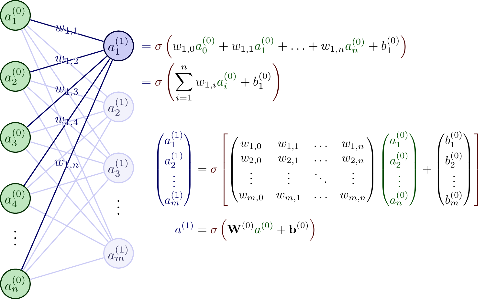
https://tikz.net/autoencoder/
```{r, engine = 'tikz', engine.opts=font_opts}
#| eval: true
#| cache: true
\newcommand{\xin}[2]{$x_#2$}
\newcommand{\xout}[2]{$\hat x_#2$}
\begin{neuralnetwork}[height=8]
\tikzstyle{input neuron}=[neuron, fill=orange!70];
\tikzstyle{output neuron}=[neuron, fill=blue!60!black, text=white];
\inputlayer[count=8, bias=false, title=Input Layer, text=\xin]
\hiddenlayer[count=5, bias=false]
\linklayers
\hiddenlayer[count=3, bias=false, title=Latent\\Representation]
\linklayers
\hiddenlayer[count=5, bias=false]
\linklayers
\outputlayer[count=8, title=Output Layer, text=\xout]
\linklayers
\end{neuralnetwork}
```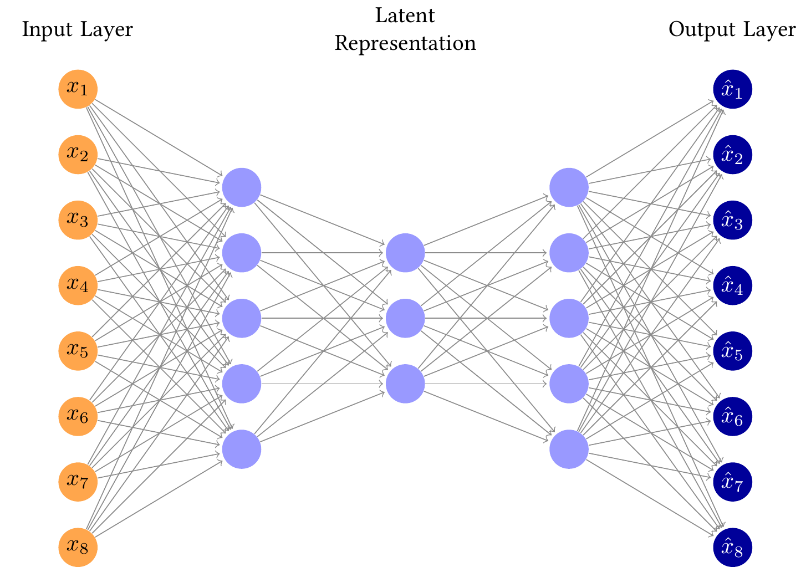
https://tikz.net/vae/
```{r, engine = 'tikz', engine.opts=font_opts, cache=TRUE}
#| eval: true
\usetikzlibrary{fit,positioning}
\newcommand\drawNodes[2]{
% #1 (str): namespace
% #2 (list[list[str]]): list of labels to print in the node of each neuron
\foreach \neurons [count=\lyrIdx] in #2 {
\StrCount{\neurons}{,}[\lyrLength] % use xstring package to save each layer size into \lyrLength macro
\foreach \n [count=\nIdx] in \neurons
\node[neuron] (#1-\lyrIdx-\nIdx) at (2*\lyrIdx, \lyrLength/2-1.4*\nIdx) {\n};
}
}
\newcommand\denselyConnectNodes[2]{
% #1 (str): namespace
% #2 (list[int]): number of nodes in each layer
\foreach \n [count=\lyrIdx, remember=\lyrIdx as \previdx, remember=\n as \prevn] in #2 {
\foreach \y in {1,...,\n} {
\ifnum \lyrIdx > 1
\foreach \x in {1,...,\prevn}
\draw[->] (#1-\previdx-\x) -- (#1-\lyrIdx-\y);
\fi
}
}
}
\begin{tikzpicture}[
shorten >=1pt, shorten <=1pt,
neuron/.style={circle, draw, minimum size=4ex, thick},
legend/.style={font=\large\bfseries},
]
% encoder
\drawNodes{encoder}{{{,,,,}, {,,,}, {,,}}}
\denselyConnectNodes{encoder}{{5, 4, 3}}
% decoder
\begin{scope}[xshift=11cm]
\drawNodes{decoder}{{{,,}, {,,,}, {,,,,}}}
\denselyConnectNodes{decoder}{{3, 4, 5}}
\end{scope}
% mu, sigma, sample nodes
\foreach \idx in {1,...,3} {
\coordinate[neuron, right=2 of encoder-3-2, yshift=\idx cm,, fill=yellow, fill opacity=0.2] (mu-\idx);
\coordinate[neuron, right=2 of encoder-3-2, yshift=-\idx cm, fill=blue, fill opacity=0.1] (sigma-\idx);
\coordinate[neuron, right=4 of encoder-3-2, yshift=\idx cm-2cm, fill=green, fill opacity=0.1] (sample-\idx);
}
% mu, sigma, sample boxes
\node [label=$\mu$, fit=(mu-1) (mu-3), draw, fill=yellow, opacity=0.45] (mu) {};
\node [label=$\sigma$, fit=(sigma-1) (sigma-3), draw, fill=blue, opacity=0.3] (sigma) {};
\node [label=sample, fit=(sample-1) (sample-3), draw, fill=green, opacity=0.3] (sample) {};
% mu, sigma, sample connections
\draw[->] (mu.east) edge (sample.west) (sigma.east) -- (sample.west);
\foreach \a in {1,2,3}
\foreach \b in {1,2,3} {
\draw[->] (encoder-3-\a) -- (mu-\b);
\draw[->] (encoder-3-\a) -- (sigma-\b);
\draw[->] (sample-\a) -- (decoder-1-\b);
}
% input + output labels
\foreach \idx in {1,...,5} {
\node[left=0 of encoder-1-\idx] {$x_\idx$};
\node[right=0 of decoder-3-\idx] {$\hat x_\idx$};
}
\node[above=0.1 of encoder-1-1] {input};
\node[above=0.1 of decoder-3-1] {output};
\end{tikzpicture}
```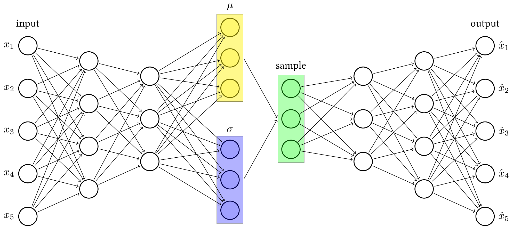
https://tikz.net/regular-vs-bayes-nn/
```{r, engine = 'tikz', engine.opts=font_opts}
#| cache: true
#| fig-align: "center"
\usetikzlibrary{calc}
\def\layersep{3cm}
\newcommand\nn[1]{
% Input layer
\foreach \y in {1,...,2}
\node[neuron, fill=green!40] (i\y-#1) at (0,\y+1) {$i\y$};
% Hidden layer
\foreach \y in {1,...,4}
\path node[neuron, fill=blue!40] (h\y-#1) at (\layersep,\y) {$h\y$};
% Output node
\node[neuron, fill=red!40] (o-#1) at (2*\layersep,2.5) {$o$};
% Connect every node in the input layer with every node in the hidden layer.
\foreach \source in {1,...,2}
\foreach \dest in {1,...,4}
\path (i\source-#1) edge (h\dest-#1);
% Connect every node in the hidden layer with the output layer
\foreach \source in {1,...,4}
\path (h\source-#1) edge (o-#1);
}
\begin{tikzpicture}[
scale=1.2,
shorten >=1pt,->,draw=black!70, node distance=\layersep,
neuron/.style={circle,fill=black!25,minimum size=20,inner sep=0},
edge/.style 2 args={pos={(mod(#1+#2,2)+1)*0.33}, font=\tiny},
distro/.style 2 args={
edge={#1}{#2}, node contents={}, minimum size=0.6cm, path picture={\draw[double=orange,white,thick,double distance=1pt,shorten >=0pt] plot[variable=\t,domain=-1:1,samples=51] ({\t},{0.2*exp(-100*(\t-0.05*(#1-1))^2 - 3*\t*#2))});}
},
weight/.style 2 args={
edge={#1}{#2}, node contents={\pgfmathparse{0.35*#1-#2*0.15}\pgfmathprintnumber[fixed]{\pgfmathresult}}, fill=white, inner sep=2pt
}
]
\nn{regular}
\begin{scope}[xshift=8cm]
\nn{bayes}
\end{scope}
% Draw weights for all regular edges.
\foreach \i in {1,...,2}
\foreach \j in {1,...,4}
\path (i\i-regular) -- (h\j-regular) node[weight={\i}{\j}];
\foreach \i in {1,...,4}
\path (h\i-regular) -- (o-regular) node[weight={\i}{1}];
% Draw distros for all Bayesian edges.
\foreach \i in {1,...,2}
\foreach \j in {1,...,4}
\path (i\i-bayes) -- (h\j-bayes) node[distro={\i}{\j}];
\foreach \i in {1,...,4}
\path (h\i-bayes) -- (o-bayes) node[distro={\i}{1}];
\end{tikzpicture}
```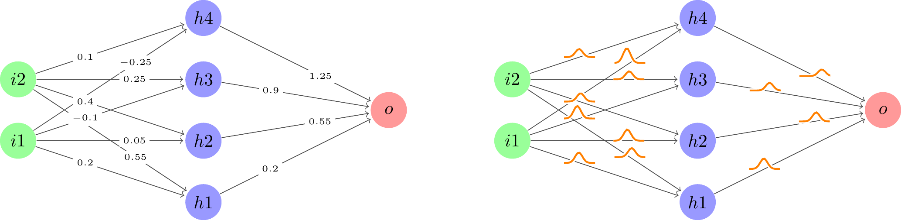
https://github.com/ccfang2/nndiagram
```{r}
#| results: 'asis'
#| eval: false
library(nndiagram)
nnd <- nndiagram(input=3, hidden=c(4,4,4))
cat(paste(nnd,"\n"))
``````{r, engine = 'tikz'}
#| eval: true
#| cache: true
\def\layersep{2.5cm}
\newcommand*\circled[1]{\tikz[baseline=(char.base)]{
\node[shape=rectangle,inner sep=3pt, draw=black!100, fill= black!25] (char) {#1};}}
\centering
\begin{tikzpicture}[shorten >=1pt,->,draw=black!100, node distance=\layersep, scale=1]
\tikzstyle{every pin edge}=[<-,shorten <=1pt];
\tikzstyle{neuron}=[circle, draw=black!100, minimum size=17pt,inner sep=0pt];
\tikzstyle{input neuron}=[neuron];
\tikzstyle{output neuron}=[neuron];
\tikzstyle{hidden neuron}=[neuron];
\tikzstyle{annot} = [text width=4em, text centered, text=black!100]
% drawing neurons
\foreach \name / \y in {1,...,3}
\node [input neuron, pin=left:\textcolor{black!100}{Input \y}] (I-\name) at (0,-0.5-\y) {};
\foreach \name / \y in {1/1,2/2,3/3,4/4}
\path[yshift=0cm]
node[hidden neuron] (H-\name) at (1* \layersep,-\y cm) {};
\foreach \name / \y in {5/1,6/2,7/3,8/4}
\path[yshift=0cm]
node[hidden neuron] (H-\name) at (2* \layersep,-\y cm) {};
\foreach \name / \y in {9/1,10/2,11/3,12/4}
\path[yshift=0cm]
node[hidden neuron] (H-\name) at (3* \layersep,-\y cm) {};
\node[output neuron,pin={[pin edge={->}]right:\textcolor{black!100}{Output}}, right of=H-10, yshift=-0.5cm] (O) {};
% drawing arrows
\foreach \source in {1,...,3}
\foreach \dest in {1,...,4}
\path (I-\source) edge (H-\dest);
\foreach \source in {1,...,4}
\foreach \dest in {5,...,8}
\path (H-\source) edge (H-\dest);
\foreach \source in {5,...,8}
\foreach \dest in {9,...,12}
\path (H-\source) edge (H-\dest);
\foreach \source in {9,...,12}
\path (H-\source) edge (O);
% annotations
\node[annot,above of=I-1, node distance=2.5cm] {Input layer};
\node[annot,above of=I-1, node distance=1.5cm] {$\circled{3}$};
\node[annot,above of=H-1, node distance=2cm] (hl1) {Hidden layer 1};
\node[annot,above of=H-1, node distance=1cm] (hl1) {$\circled{4}$};
\node[annot,above of=H-5, node distance=2cm] (hl2) {Hidden layer 2};
\node[annot,above of=H-5, node distance=1cm] (hl2) {$\circled{4}$};
\node[annot,above of=H-9, node distance=2cm] (hl3) {Hidden layer 3};
\node[annot,above of=H-9, node distance=1cm] (hl3) {$\circled{4}$};
\node[annot,above of =O, node distance=3.5cm] {Output layer};
\node[annot,above of =O, node distance=2.5cm] {$\circled{1}$};
\end{tikzpicture}
```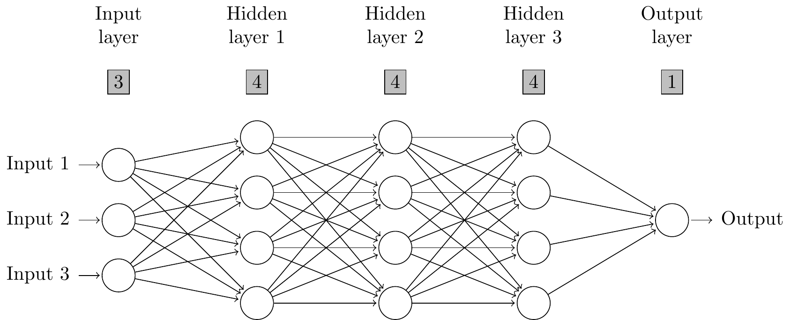
https://tikz.net/manifold/
```{{r, engine = 'tikz',engine.opts=list(extra.preamble = c("\\usepackage{cmbright}"))}}
#| eval: true
#| cache: true
\usetikzlibrary{arrows.meta}
\definecolor{green}{rgb}{0.0,0.50,0.0}
\tikzset{>={Straight Barb[angle'=80, scale=1.1]}}
\begin{tikzpicture}
\draw[->] (0, 0) -- ++(0, 2);
\draw[->] (0, 0) -- ++(2.5, 0.6);
\draw[->] (0, 0) -- ++(3, 0) node[midway, below, yshift=-0.5em]
{Original space ${\cal X}$};
\draw[fill=green!50, draw=none, shift={(0.2, 0.7)},scale=0.5]
(0, 0) to[out=20, in=140] (1.5, -0.2) to [out=60, in=160]
(5, 0.5) to[out=130, in=60]
cycle;
\shade[thin, left color=green!10, right color=green!50, draw=none,
shift={(0.2, 0.7)},scale=0.5]
(0, 0) to[out=10, in=140] (3.3, -0.8) to [out=60, in=190] (5, 0.5)
to[out=130, in=60] cycle;
\draw[->] (4.8, 0.8) -- ++(0, 2);
\draw[->] (4.8, 0.8) -- ++(2, 0) node[midway, below, yshift=-0.5em]
{Latent space ${\cal F}$};
\draw[thin, fill=green!30, draw=none, shift={(5.4, 1.1)}, rotate=20]
(0, 0) -- (1, 0) -- (1, 1) -- (0, 1) -- cycle;
\draw[thick,->,red]
(1.5, 1.3) to [out=55, in=150] node[midway, above, xshift=6pt, yshift=2pt]
{$f$} (5.7, 2);
\draw[thick,->,blue] (1.5, 1.3) ++(4.03, 0.3) to [out=150, in=55]
node[midway, below, xshift=2pt, yshift=-2pt] {$g$} ++(-3.6, -0.5);
\end{tikzpicture}
```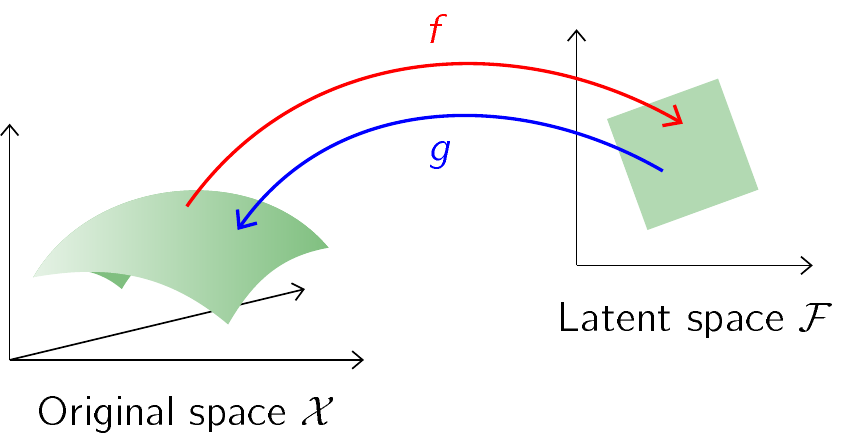
https://tikz.net/maf/
```{r, engine = 'tikz'}
#| cache: true
\usetikzlibrary{calc,positioning}
\begin{tikzpicture}[
thick, text centered,
box/.style={draw, thin, minimum width=1cm},
func/.style={circle, text=white},
input/.style={draw=red, very thick},
]
% x nodes
\node[box, input, fill=blue!20] (x1) {$x_1$};
\node[box, input, fill=blue!20, right of=x1] (x2) {$x_2$};
\node[right of=x2] (xdots1) {\dots};
\node[box, input, fill=blue!20, right of=xdots1] (xd) {$x_d$};
\node[box, fill=green!60!black, text opacity=1, opacity=0.4, right=2 of xd] (xdp1) {$x_{d+1}$};
\node[right of=xdp1] (xdots2) {\dots};
\node[box, fill=green!60!black, text opacity=1, opacity=0.4, right of=xdots2] (xD) {$x_D$};
% z nodes
\node[box, fill=blue!20, below=3 of x1] (z1) {$z_1$};
\node[box, fill=blue!20, right of=z1] (z2) {$z_2$};
\node[right of=z2] (zdots1) {\dots};
\node[box, fill=blue!20, right of=zdots1] (zd) {$z_d$};
\node[box, input, fill=orange!40, right=2 of zd] (zdp1) {$z_{d+1}$};
\node[right of=zdp1] (zdots2) {\dots};
\node[box, fill=orange!40, right of=zdots2] (zD) {$z_D$};
% z to x lines
\draw[->] (zdp1) -- (xdp1);
% scale and translate functions
\node[func, font=\large, fill=teal, above right=0.1] (t) at ($(zd)!0.5!(xdp1)$) {$t$};
\fill[teal, opacity=0.5] (x1.south west) -- (t.center) -- (xd.south east) -- (x1.south west);
\node[func, font=\large, fill=orange, below left=0.1] (s) at ($(zd)!0.5!(xdp1)$) {$s$};
\fill[orange, opacity=0.5] (x1.south west) -- (s.center) -- (xd.south east) -- (x1.south west);
% feeding in s and t
\node[func, inner sep=0, fill=orange] (odot1) at ($(zdp1)!0.4!(xdp1)$) {$\odot$};
\node[func, inner sep=0, fill=teal] (oplus1) at ($(zdp1)!0.7!(xdp1)$) {$\oplus$};
\draw[orange, ->] (s) to[bend right=5] (odot1);
\draw[teal, ->] (t) to[bend right=5] (oplus1);
\end{tikzpicture}
```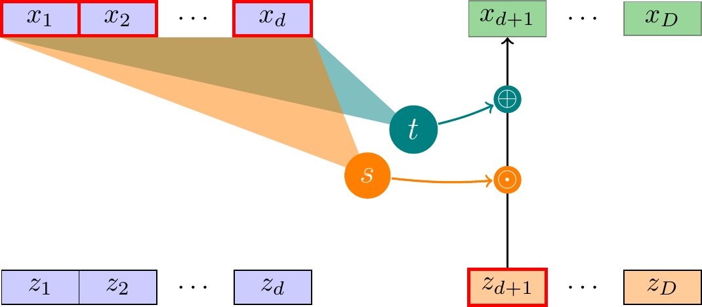
```{r, engine = 'tikz'}
#| eval: false
\usetikzlibrary{positioning}
\def\layersep{3.5cm}
\begin{tikzpicture}[shorten >=1pt,->,draw=black!50, node distance=\layersep]
\tikzstyle{every pin edge}=[<-,shorten <=1pt]
\tikzstyle{neuron}=[circle,fill=black!25,minimum size=17pt,inner sep=0pt]
\tikzstyle{input neuron}=[neuron, fill=green!50];
\tikzstyle{output neuron}=[neuron, fill=red!50];
\tikzstyle{annot} = [text width=4em, text centered]
% Draw the input layer nodes
\foreach \name / \y in {1,2}
\node[input neuron, pin=left:Input \#\y] (I-\name) at (0,-\y) {};
% Draw the output layer nodes
\foreach \name / \y in {1,2,3}
\path[yshift=1.0cm]
node[output neuron] (O-\name) at (\layersep,-\y cm) {};
% Connect every node in the input layer with every node in the
% output layer.
\foreach \source in {1,2}
\foreach \dest in {1,2,3}
\path (I-\source) edge (O-\dest);
% Annotate the layers with equations
\node[above of=I-1, node distance=1.5cm] (il) {$a_i(X)=e^{-\gamma \cdot (X-X_i)^2}$ \\ $\frac{a_i(X)}{\sum a_i(X)}$};
\node[above of=O-1, node distance=1.5cm] (ol) {$O_j(X)=\sum_{i=1}^M w_{j i} \cdot a_i(X)$ \\ $P[Y_j|X]=\frac{O_j(X)}{\sum_{k=1}^L O_k(X)}$};
\end{tikzpicture}
``````{r, engine = 'tikz'}
#| eval: false
#|
\usetikzlibrary{positioning}
\def\layersep{3.5cm}
\begin{tikzpicture}[shorten >=1pt,->,draw=black!50, node distance=\layersep]
\tikzstyle{every pin edge}=[<-,shorten <=1pt]
\tikzstyle{neuron}=[circle,fill=black!25,minimum size=17pt,inner sep=0pt]
\tikzstyle{input neuron}=[neuron, fill=green!50];
\tikzstyle{output neuron}=[neuron, fill=red!50];
\tikzstyle{annot} = [text width=4em, text centered]
% Draw the input layer nodes
\foreach \name / \y in {1,2}
\node[input neuron, pin=left:Input \#\y] (I-\name) at (0,-\y) {$X_{\y}$};
% Draw the output layer nodes
\foreach \name / \y in {1,2,3}
\path[yshift=1.0cm]
node[output neuron] (O-\name) at (\layersep,-\y cm) {$Y_{\y}$};
% Connect every node in the input layer with every node in the
% output layer.
\foreach \source in {1,2}
\foreach \dest in {1,2,3}
\path (I-\source) edge (O-\dest);
% Annotate the layers with equations
\node[above of=I-1, node distance=1.5cm] (il) {$a_i(X)=e^{-\gamma \cdot (X-X_i)^2}$ \\ $\frac{a_i(X)}{\sum a_i(X)}$};
\node[above of=O-1, node distance=1.5cm] (ol) {$O_j(X)=\sum_{i=1}^M w_{j i} \cdot a_i(X)$ \\ $P[Y_j|X]=\frac{O_j(X)}{\sum_{k=1}^L O_k(X)}$};
\end{tikzpicture}
``````{r, engine = 'tikz'}
#| eval: false
#|
\usetikzlibrary{positioning, fit}
\def\layersep{3.5cm}
\begin{tikzpicture}[shorten >=1pt,->,draw=black!50, node distance=\layersep]
\tikzstyle{every pin edge}=[<-,shorten <=1pt]
\tikzstyle{neuron}=[circle,fill=black!25,minimum size=17pt,inner sep=0pt]
\tikzstyle{input neuron}=[neuron, fill=green!50];
\tikzstyle{output neuron}=[neuron, fill=red!50];
\tikzstyle{annot} = [text width=4em, text centered]
% Draw the input layer nodes
\foreach \name / \y in {1,2}
\node[input neuron, pin=left:Input \#\y] (I-\name) at (0,-\y) {$X_{\y}$};
% Draw the output layer nodes
\foreach \name / \y in {1,2,3}
\path[yshift=1.0cm]
node[output neuron] (O-\name) at (\layersep,-\y cm) {$Y_{\y}$};
% Connect every node in the input layer with every node in the
% output layer.
\foreach \source in {1,2}
\foreach \dest in {1,2,3}
\path (I-\source) edge (O-\dest);
% Annotate the layers with equations
\node[above of=I-1, node distance=1.5cm] (il) {$a_i(X)=e^{-\gamma \cdot (X-X_i)^2}$ \\ $\frac{a_i(X)}{\sum a_i(X)}$};
\node[above of=O-1, node distance=1.5cm] (ol) {$O_j(X)=\sum_{i=1}^M w_{j i} \cdot a_i(X)$ \\ $P[Y_j|X]=\frac{O_j(X)}{\sum_{k=1}^L O_k(X)}$};
% Draw rectangles over the input and output layer nodes
\node[rectangle, draw=black, inner sep=0.5cm, fit=(I-1) (I-2)] (inputbox) {};
\node[rectangle, draw=black, inner sep=0.5cm, fit=(O-1) (O-2) (O-3)] (outputbox) {};
\end{tikzpicture}
``````{r, engine = 'tikz'}
#| eval: false
\usetikzlibrary{positioning, fit, calc}
\def\layersep{5cm}
\begin{tikzpicture}[shorten >=1pt,->,draw=black!50, node distance=\layersep]
\tikzstyle{every pin edge}=[<-,shorten <=1pt]
\tikzstyle{neuron}=[circle,fill=black!25,minimum size=17pt,inner sep=0pt]
\tikzstyle{input neuron}=[neuron, fill=green!50];
\tikzstyle{output neuron}=[neuron, fill=red!50];
\tikzstyle{annot} = [text centered]
% Draw the input layer nodes horizontally
\foreach \name / \y in {1,2}
\node[input neuron, pin=left:Input \#\y] (I-\name) at ($(1.5*\y cm,0)$) {$X_{\y}$};
% Draw the output layer nodes
\foreach \name / \y in {1,2,3}
\node[output neuron] (O-\name) at ($(1.5*\name cm, -\layersep)$) {$Y_{\y}$};
% Connect every node in the input layer with every node in the
% output layer.
\foreach \source in {1,2}
\foreach \dest in {1,2,3}
\path (I-\source) edge (O-\dest);
% Add input stimulus symbol above the input layer
\node[above=2cm of I-1, anchor=south] (input-stimulus) {Stimulus $S$};
% Add output response symbol below the output layer
\node[below=2cm of O-2, anchor=north] (output-response) {Response $R$};
% Annotate the layers with equations
\node[left=4cm of I-1, anchor=east, font=\small, text width=5cm] (ile) {$a_i(X)=e^{-\gamma \cdot (X-X_i)^2}$ \\ $\frac{a_i(X)}{\sum a_i(X)}$};
\node[left=4cm of O-1, anchor=east, font=\small, text width=5cm] (ole) {$O_j(X)=\sum_{i=1}^M w_{j i} \cdot a_i(X)$ \\ $P[Y_j|X]=\frac{O_j(X)}{\sum_{k=1}^L O_k(X)}$};
% Add rectangles around input and output layers
\node[draw,rectangle,fit=(I-1) (I-2),minimum width=4cm, label=above:Input Layer] (input-rect) {};
\node[draw,rectangle,fit=(O-1) (O-2) (O-3),minimum width=4cm, label=above:Output Layer] (output-rect) {};
% Add rectangle for the decoding process
\node[draw,rectangle,fit=(output-response), label=above:Decoding Process, minimum width=3cm] (decoding-rect) {};
% Add arrow from output layer to decoding process
\draw[->,thick] (output-rect) -- (decoding-rect);
\end{tikzpicture}
```